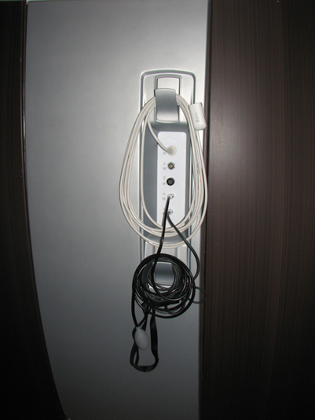

Operating Documentation
Direction 5670006, Rev# 1
Module Version 7.0, Version Date 10/18/11
Operating Documentation |
| ||||
| Electrocution Hazard! | ||||
| Dangerous Voltages are Present around the Magnet Enclosure and Rear Pedestal electronics. | ||||
| Remove Power to The Magnet Enclosure and perform LOck-out/tag-out (LOTO). |
| ||||
| POSSIBLE PERSONAL INJURY! | ||||
| THIS PROCEDURE REQUIRES MOVEMENT OF FERROUS MATERIAL IN CLOSE PROXIMITY TO THE MAGNET. | ||||
| TWO FIELD ENGINEERS ARE REQUIRED AT ALL TIMES. |
| ||||
| Personal injury and equipment damage! | ||||
| Strong Magnetic Field is present. | ||||
| When servicing any magnetic equipment, it is critically
important that the service engineer consciously plan the path to be
taken when moving highly ferrous devices in the magnet environment.
the path should be as far from the magnet as practical and avoid high-flux
density fields. Safety Requirements:
When planning a service path, it is critical that the path be clear and sufficiently wide. Ensure that there are no trip hazards, obstacles, clutter, slippery surfaces or other items even partially restricting the path. If there are portable obstacles in a path, remove them from the area and replace them after the service action is completed. It is required to walk the path prior to beginning service to ensure that there is sufficient space through which to pass for yourself and the object being serviced. |
Refer to the illustration below for location of the PAC (behind the left side, middle cover).
Illustration 1: PAC Location

Disconnect all cables from the I/O panel except the white PPG Cable, which is permanently attached.
Remove the left side covers, referring to Side Cover Removal and Installation, to access the PAC.
Carefully pass the PPG Cable through the opening in the left side, middle cover. (Avoid damage to the cable while removing the cover.)
Disconnect all cables attached to the side of the PAC.
Remove the screws securing the PAC and PAC interface to the electronic rack.
Place the PAC in the proper location and install it in reverse order from how it was removed.
Attach all previously removed cables to the replacement PAC.
Replace all previously removed covers and enclosure trim panels.
Check the alignment of the PAC with the enclosure in all three planes. Refer to the illustration below.
Remove LOTO and restore power to the system.
Before removing the SRI, the PDU must be powered down completely to prevent damage to system electronics.
Turn off power to the PDU by following LOTO for the PGR PDU/Gradient Subsystem.
Refer toIllustration 2 to locate the SRI, under the left side of the magnet enclosure toward the rear of the magnet.
Refer to Side Cover Removal and Installation to remove the left side covers and expose the SRI.
Remove the temperature sensor box attached to the SRI. (It will be reinstalled on the replacement SRI.)
Disconnect the cables attached to the SRI.
Remove the four screws securing the SRI to the electronics rack; unstrap and remove the SRI.
Remove the straps from the SRI. (They will be used when installing the new SRI.)
Place the new SRI in the proper location, and install in the reverse order of how it was removed.
Mount the removed temperature sensor box onto the replacement SRI.
Reconnect the cables and replace the enclosure panels.
Remove LOTO and restore power to the system.
Perform a TPS Reset.
Perform a Check Scan.